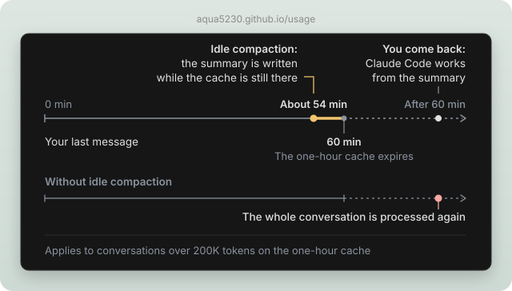

Why Does Claude Code Compact Your Conversation on Its Own?
Claude Code compacts a conversation automatically in two cases: when the context is nearly full, and when you've been away for about an hour. The second case is called idle compaction, and it arrived in October 2026. I checked my own records from September to November. All 49 automatic compactions happened after I had been away for nearly an hour. None of them happened because the context was full.
- Compaction replaces the earlier conversation with a summary. CLAUDE.md is loaded again, but things you only said in the conversation can be lost.
- Idle compaction writes the summary before the cache expires. That way, when you come back and send your next message, Claude Code doesn't have to process the whole long conversation again.
- To control it yourself, run
/compactwith the points you want to keep, and run/clearwhen you switch tasks. If you don't want idle compaction, turn it off in/config.
What is the context?
The context is everything Claude can see in the current conversation. The official glossary calls it "the working memory for a session." It holds the conversation history, the contents of files Claude has read, command output, CLAUDE.md, auto memory, loaded skills, and system instructions.
Before you type anything, CLAUDE.md, auto memory, MCP tool names, and skill descriptions are already in the context. After that, every file Claude reads and every command it runs adds more. So the longer a conversation runs, the larger its context gets.
To see how much is in use, type /context in Claude Code. It lists how much each category takes up and suggests ways to reduce it.
Case one: compaction when the context is nearly full
The context has a limit. Opus 4.7 and later, Sonnet 5 and later, Haiku 5.5, and the Fable models have a 1 million token window (a token is the unit a model uses to count text). According to the documentation, these models compact automatically at about 967K tokens by default. Sonnet 4.6 and Opus 4.6 without extended context compact at 200K tokens.
When it compacts, Claude Code writes a summary of the conversation and replaces the original history with it. So a full context doesn't end your session.
Case two: compaction after you've been away for about an hour
This is idle compaction. Claude Code 2.1.299 was released on October 14, 2026, and its changelog says:
Added idle compaction in the terminal: a 200K+ token conversation left idle for about 54 minutes is compacted before its one-hour prompt cache expires, so your next message doesn't reprocess it all
In other words, if a conversation is over 200K tokens and you've been away for about 54 minutes, Claude Code compacts it before the one-hour cache expires. The settings reference lists five conditions, and all of them must hold:
- You're in the terminal, in the VS Code extension's chat panel, or in the desktop app's Code tab.
- Auto-compaction is on.
- The conversation uses the one-hour prompt cache.
- The context has reached 200K tokens.
- About an hour has passed since the last request, and your computer has stayed awake.
After it compacts, the terminal shows a line that starts with Compacted while idle, before the prompt cache expired.
My records: 49 automatic compactions, all of them idle compactions
Claude Code saves each conversation as a JSONL file under ~/.claude/projects/. I wrote a script that reads these files, finds every compaction, and measures how long I had been away before each one.
- From September 10 to November 23, 2026, there were 50 compactions. I ran
/compactmyself once; the other 49 were automatic. - Before each of the 49 automatic compactions, I had been away for 54 to 56 minutes. Each one was followed by the
Compacted while idlenotice. - The context before compaction ranged from about 200K to about 710K tokens. The Opus 5.5 model I use compacts for a full context at about 967K, and none of the 49 came close.

So if you often leave a conversation open while you go to a meeting or lunch, the compaction you see when you come back is most likely an idle compaction.
Why compact while you're away?
Because the cache only lasts for a while. The prompt cache stores the part of the conversation that has already been processed. According to the documentation, without caching, every turn would reprocess your full history. With caching, the re-read is billed at the cached token rate, and only what changed is fully processed.
The cache lives for either five minutes or one hour. Claude Code requests the one-hour cache for the main conversation only when you're on a Claude subscription and within your plan's included usage.
Once the hour passes, the cache is gone. When you come back and send a message, hundreds of thousands of tokens have to be processed again as uncached input. The documentation also notes that after a break longer than the cache lifetime, compaction has to reprocess the history as uncached input, which is why /compact costs the most when you resume an old session. Idle compaction writes the summary while the cache is still there.

These conditions lead to one more conclusion. Once you go over your plan's usage limit and start paying with usage credits, Claude Code drops the main conversation to the five-minute cache. The one-hour cache condition no longer holds, so idle compaction doesn't happen.
What survives a compaction, and what's lost?
The documentation has a table. Here are the main rows:
| What | After compaction |
|---|---|
| Project-root CLAUDE.md and rules without a path scope | Reloaded from disk |
| Auto memory | Reloaded from disk |
| The plan Claude wrote in plan mode | Reloaded from disk |
| Files Claude read or edited | Up to five are read again, most recently modified first; a file over 5,000 tokens comes back as a path only |
| Skills that were used | Put back, up to 5,000 tokens each and 25,000 tokens in total |
| The conversation itself, including what hooks added | Replaced by the summary |
The documentation warns that the summary keeps your requests and key code snippets, but detailed instructions from early in the conversation may be lost. So put rules that should always apply in CLAUDE.md instead of only saying them in the conversation.
How to control compaction yourself
- Compact first: before a big task, run
/compactfollowed by what to keep, such as/compact focus on the auth bug fix. The summary then keeps the points you chose instead of the ones automatic compaction picks. - Clear between tasks: run
/clearwhen you switch to unrelated work. The documentation says old conversation crowds out the files you need next and costs tokens on every message. - Compact earlier: run
/autocompact 500k, and Claude Code compacts automatically once the context reaches 500K tokens. - Turn off idle compaction: type
/configin the terminal and change the Idle compaction row. You can also add"idleCompaction": falseto~/.claude/settings.json. - Change the idle compaction threshold: the environment variable
CLAUDE_CODE_IDLE_COMPACT_MIN_TOKENSchanges the 200K threshold. The lowest value is 100K.
If the context fills up again right after a compaction, Claude Code stops compacting automatically and shows Autocompact is thrashing: the context refilled to the limit.... A large file or a very long output usually causes this. The documentation suggests asking Claude to read the file in smaller pieces, running /compact to drop the large output, handing the large-file work to a subagent, or running /clear.
How to keep an eye on the context
/context: a built-in Claude Code command that lists how much each category takes up.- usage:
usageis a free, open-source app. Its terminal status line shows what percentage of the context is in use. At 70%, it reminds you to run/clearif you're switching tasks, or/compactto keep the key points if you're continuing. If the context grows quickly, the reminder appears earlier, at 55% to 60%. It also shows Claude Code's 5-hour and weekly limits in the macOS menu bar or the Windows system tray.
Where the data comes from
- The compaction records come from the author's own Claude Code conversation logs on a Mac, from 2026-09-10 to 2026-11-23. A compaction is a line in the logs whose
subtypeiscompact_boundary; when the same compaction appears in several files, it is counted once. Time away is measured from the last message before the compaction to the compaction itself. - Release dates come from the npm publish history of
@anthropic-ai/claude-code. - The documentation was checked on 2026-11-25.